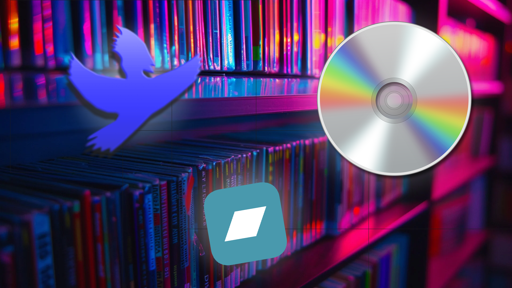

The Best Ways To Get High Quality Music
Posted on June 19th, 2025.
Written by Wobbyl
So you want to start downloading more music for your library, this article explains the best paid and free methods of getting high quality FLAC music, ready to play and sound great on any DAC or sound system.
The Best Paid Methods:
Paying for music is a great way to support artists, and physically owning your albums is amazing, so here are the best ways of getting music while still supporting artists and businesses.
1) Ripping From CD's:
If you already have a large collection of physical music, ripping from CD's is a great way to turn your already existing music collection into something you can just carry around with you. It's great as you already own the music, but new music can be expensive and it takes a while to process a lot of albums.
-
Pros:
- You already own the music.
- It's nice to own physical albums.
- It can take a while to rip a lot of music, depending on your computer.
- New CD's are often quite expensive.
- You have to wait for shipping if you order online.
Cons:
2) Buying from a Digital Service:
Buying music from a digital service can be great, it's quick, easy and often cheap due to many music services using subscrption-based business models. Sometimes, it's good for artsits, depending on the service you use. 7digital and bandcamp are good options.
-
Pros:
- It's easy, just pay and download
- Platforms like bandcamp don't take a huge cut, they pay artists well.
- It could be unsafe depending on where you donwload from.
- Same price as CD's.
- Some platforms do not pay artists fairly.
Cons:
The Best Free Methods:
You want free music? Well lets hoist the colours and sail the high seas! Piracy is the best way to obtain free music, but fear not! All the methods are completley safe, and surprisingly easy too!
1) Using Soulseek:
Soulseek is a free-to-use file sharing network which allows users to share files on their computer to other soulseek users, this includes (you guessed it) music! People share their whole music librarys to soulseek, often in FLAC format. It's as easy as searching for an album and clicking download!
-
Pros:
- It's completely free.
- Music is often already tagged for easy sorting.
- It's actaully legal.
- Downloads can often be slow or unreliable.
- Some music isn't on there (I couldn't find Lady Gaga music :(
Cons:

2) Streaming Platform Downloaders:
Streaming platform downloaders are an okay way to get music, not the best though, avoid them if you can. They don't often download in FLAC and should only really be used as a last resort if you can't get an album anywhere else. They do have upsides though, they can be quick and easy to use vs torrenting or soulseek.
-
Pros:
- It's completely free.
- Easy to use.
- It's actaully legal.
- They can sometimes be slow.
- Music might be untagged.
Cons:
Conclusion:
In conclusion, I think soulseek is a great choice for free music, and CD's are the best choice for paid music. Having physical albums is great, even if I never actaully use the discs themselves and just rip them to my iPod. If you have anymore suggestions of what I should add, just send me an email. Thanks for reading!
Made by Charlie Richardson, 2025